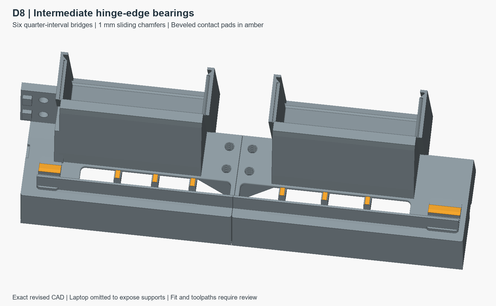
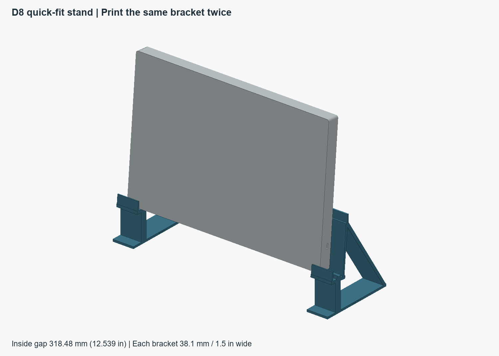

Put the weight on its feet.
Six chamfered bridges support the straight hinge edge at quarter intervals along the inlet slots. The laptop leans 5° onto the plenum; perimeter feet carry its weight.
A serviceable printed dock: recessed fans, captured connectors and adjustable hardware.
The reported seating problem still needs a physical contact check. The verified full-height coupons and diagnostic evidence are filed locally; see the handoff for their locations and next steps.
Open the handoff, deliverables and next steps →A desk dock for the Precision 5680
Let the air plenum do the work of a stand.
A little lean. Two recessed fans. A removable connector, adjustable to meet your laptop.

Six chamfered bridges support the straight hinge edge at quarter intervals along the inlet slots. The laptop leans 5° onto the plenum; perimeter feet carry its weight.
Two recessed 120 mm fans discharge upward at 18°. Flat grilles and separate clips keep fan service simple.
The connector slides in Y and Z. A separate X stop sets the laptop position. Printed hand controls lock each setting.

02 / THE WORKING MODEL
Inspect the current D8 geometry, identify individual parts and explore how the assembly fits together.
Open the full viewer03 / MADE TO BE MADE
Every part has a chosen print orientation. PETG, a P1S and a 0.4 mm nozzle set the starting point; final slicing and physical checks come next.
42 PETG parts + one flexible stop
1 mm chamfers in both sliding directions
94 g combined, down from 180 g
Two small clips retain each flat grille. Remove the clips and slide out the grille to reach the fan. No full perimeter gasket is required.
Shells print upright. Covers lie flat. Springs and clips flex within their printed layers. Large custom hand screws secure the assembly.
Unload the laptop and release two mounting locks. Pull 4.3 mm to clear the keys, then slide the connector module outboard with its cable captured.

SET THE FIT. KEEP IT SERVICEABLE.
Move the cable cradle across the laptop thickness and the saddle along its height, then lock them with accessible knobs. The independent X stop sets the final docking position.
The existing printed face cam and spring remain. Holder stiffness, release force and warm creep still need measurement; the mechanism does not establish protection for a mated port.
Read the assembly guideDESIGN RECORD / CHECKS / OPEN QUESTIONS
All 75 CAD solids (including eight optional desk-grip pads) and 43 manufacturing meshes pass the recorded checks. Sampled docking and service paths clear. Physical fit, strength and cooling remain to be tested.
OPEN DESIGN / D8
43 print meshes, source, print orientations and review evidence. Download printable-only STEP for arranging plates, or the full reference assembly separately.
Current prototype · CAD and mesh checks passed
Re-slice the revised shells. The six chamfered bearing bridges need a fresh support and material review in OrcaSlicer.
Download print + source packagePrintable STEP contains 43 separate solids in manufacturing orientations; arrange them onto plates. The small connector stop tip uses TPU. Prepare the final P1S slice and inspect shell supports. Print fit samples before the full build. Desk-grip pads are optional; the connector retains its separate soft stop.
QUICK FIT / TWO IDENTICAL PRINTS
Two 1½-inch-wide open brackets hold the closed laptop at D8’s seat height and 5° lean. Their feet and upper flags mark the body envelope, excluding the removable connector.

Print twice. Leave 318.48 mm / 12.539 inches between the inner faces. Outer width: 394.68 mm / 15.539 inches. Depth: 135.02 mm / 5.316 inches. Height marker: 150.91 mm / 5.941 inches.
Download quick-fit STL · print twoThe STL is already on its side for edge printing. Align the laptop 16 mm in from the keyboard-left outer bracket edge and 25 mm in from the opposite edge. Nominal CAD fit checked; first physical fit and stability check remain.